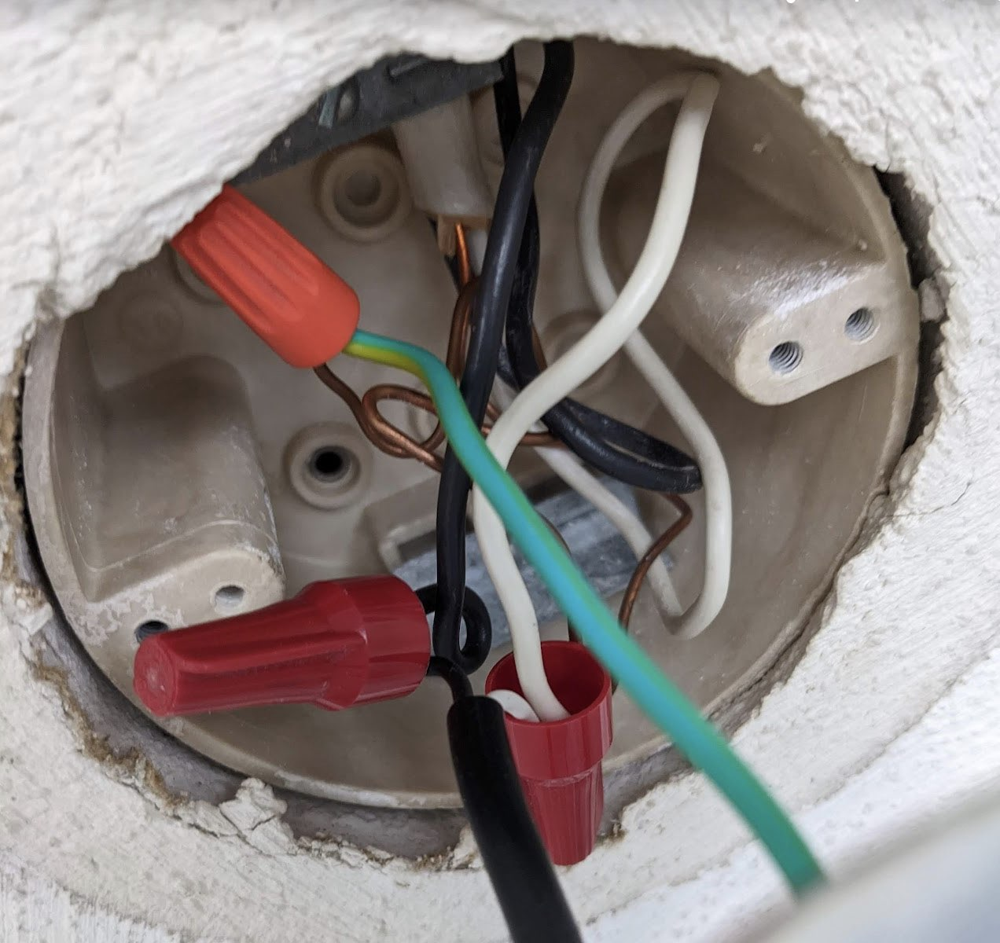
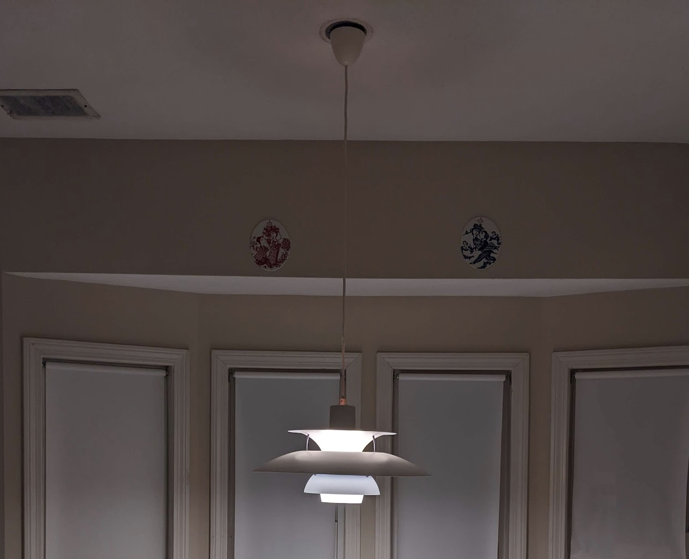

Table of Contents
1. はじめに
長い一時帰国からアメリカに帰ってきました。今回の帰国の大きな目的の一つは、ダイニングキッチン用のペンダントランプを持ってくるというものでした。日本で買ったランプはアメリカで使えるのでしょうか。
2. 日本からの持ち込み
ペンダントランプはプチプチ(正式名称不明)で梱包して段ボール箱に入れ、預け入れに持つとしてチェックインしました。特別な申告はしませんでした。持ち込み荷物が多いためアメリカ入国時にはX線でのチェックをされましたが、何も言われませんでした。禁止物では無いですからね。
3. Louis Poulsen PH 5
ペンダントランプはルイスポールセンというメーカーのPH 5という モデル です。これは結婚時に親族からいただいた思い出深いものです。ダイニングには元々IKEAのランプが付いていましたが、PH 5に付け替えます。
4. 取り付け
このPH 5は日本モデルのため 引掛シーリング に挿してひねるだけで取り付けられるようになっていますが、アメリカの規格と違うので、思い切って引掛シーリング用のアダプターを切り落とし、ケーブルをむき出しにして天井の穴から出ているケーブルとつなげます。

しかし、ケーブル同士をつなげるためのコネクター(写真の赤いプラスチックの部品)の使い方がわかりません。Youtubeで調べたところ、むき出しにした2本のケーブルの端を差し込み、時計回りに何回転かさせるだけということがわかりました。取り外すときは反時計回りに回します。かんたんな構造ですが、きちんと絶縁されるようになっており、意外とよくできています。
天井で作業している間は、家族にランプをずっと持ってもらっていましたが、後になって、ランプのシェード部分を取り外せばよかったことに気が付きました。
土曜の午前中いっぱいかかって、やっと取り付けが完了しました。殺風景で他人の家みたいだったアパートが、少し我が家っぽくなりました。
